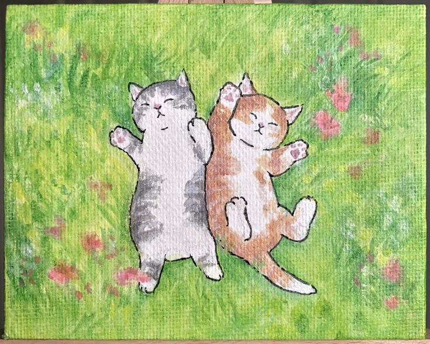
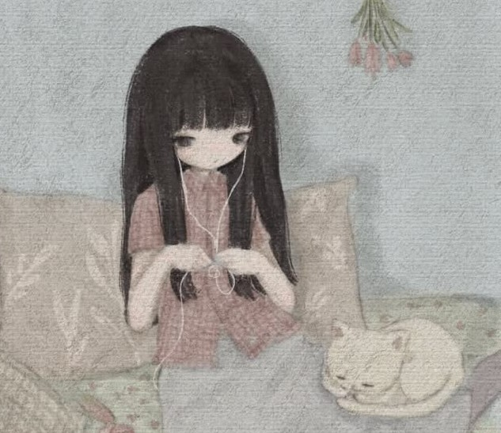
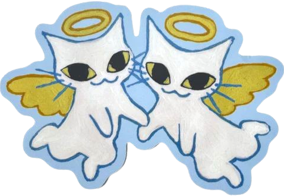
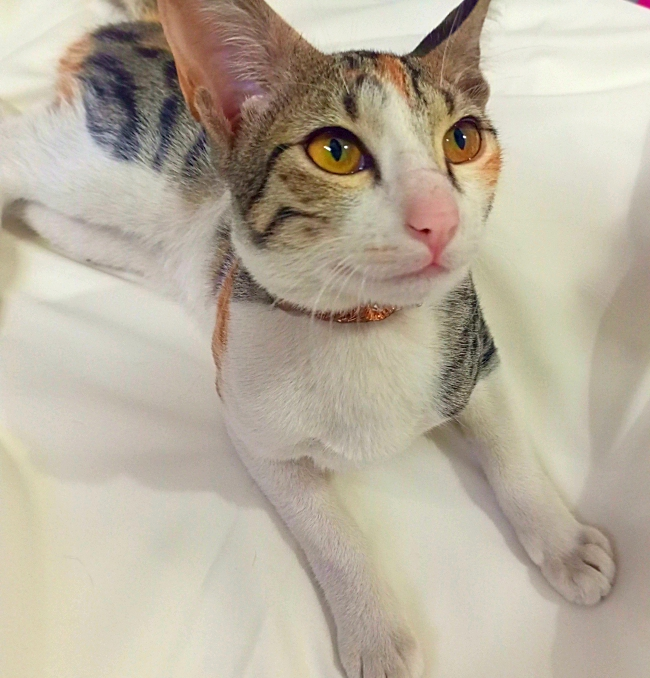

Emma she/her˙⋆✮
Date of Birth: 1st September 2022
Date of passing: 1st August 2023
Age: Around 1.5 years old
{Emma and Louis were my first ever official pets.}
About her:
Drama queen. Screams her lungs out whenever she wants attention. Food paglu. Extrovert. Emotional. Always ready for an adventure outside, loves window watching, cuddles, taking naps, and trying new treats. She's the sweetest big sister ever,she cares for her brother like a little mom, always looking after him and making sure he's okay (,,>﹏<,,).
My POV:
I named both her and her brother after Marinette and Adrien's future kids from Miraculous Ladybug Emma & Louis hehe. That little fact still makes me smile.(๑ > ᴗ < ๑) I got them from my elder cousin when they were just tiny little babies. They were so small they could fit in my hands. From the very first day, they completely stole my heart. I loved my babies more than words could ever explain, and watching her grow has been one of the happiest parts of my life. They'll always have a very special place in my heart. ♡